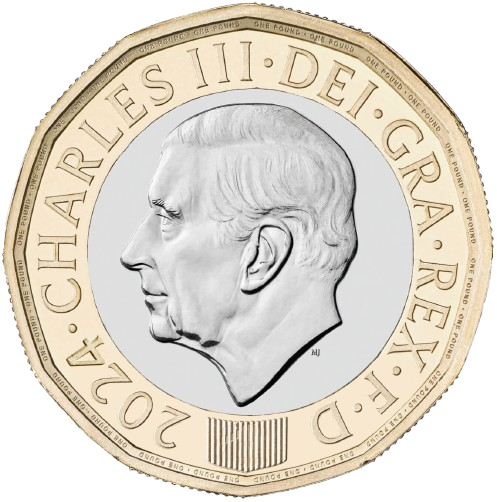

User/Pass Generator
GameHub
Welcome to the Coin Flip Game
Flip the Coin!
Flip Coin

Matrix
Starfield
Warp Speed
Particles
Circuit Pulse
← Metasploit
Home
Hydra →
 Welcome to the Coin Flip Game
Welcome to the Coin Flip Game